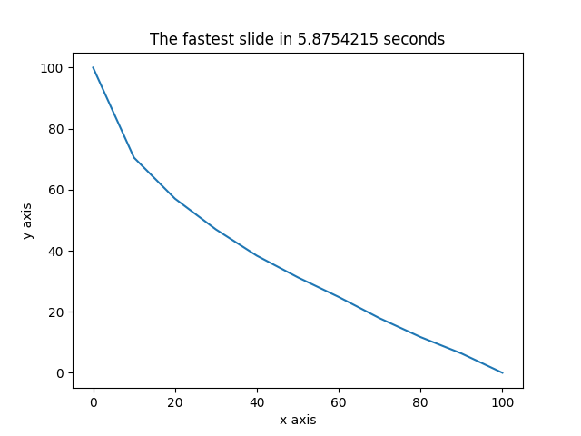

Library Management System

This library system allows the user to search, checkout and return books using a GUI (tkinter). It also allows the system manager to remove books, the system suggests which book should be removed. This project was developed using python 3 and it is structured into different modules.

Car dealership system for costumers, staff and administrators developed using Java and an object oriented approach. This system allows users to search, add and sell cars, as well as print cars into a text file, calculate the revenue and add more users into the system. The GUI was developed with Java Swing and the system uses text files as database.

Virtual pet using an Arduino Uno and an LCD display. The virtual pet has 6 different states allowing the user to feed, play and grow the pet. Additionally there is an IDLE state where the user can see the pet stats and a menu where the user can decide to save, delete or start and new pet.

This website allows users to search athletes by name and country, users can also compare countries by different parameters such as the amount of medals they won, by name or population, amongst others. This website also allows users to calculate body mass index. This website uses an SQL database, php, and jquery as well as AJAX.
Generation of a 2D slide using functional programming and genetic algorithms.
This is a Haskell program implementing a genetic algorithm which computes the fastest slide (i.e. the supporting points forming the slide with the shortest sliding time). It uses basic physics concepts to calculate the time it would take an object to run through the slide. The overall goal of this project was to implement a genetic algorithm which creates a population of random slides (called candidates) and uses genetic operations to iteratively improve the quality of the population. After the last iteration, the best slide is returned.

The purpose of this project was to practice Javascript, HTML and CSS after I taught it to myself. Please note that its intent is not to show strong coding practices or expertise of any kind. Click here to go to the website